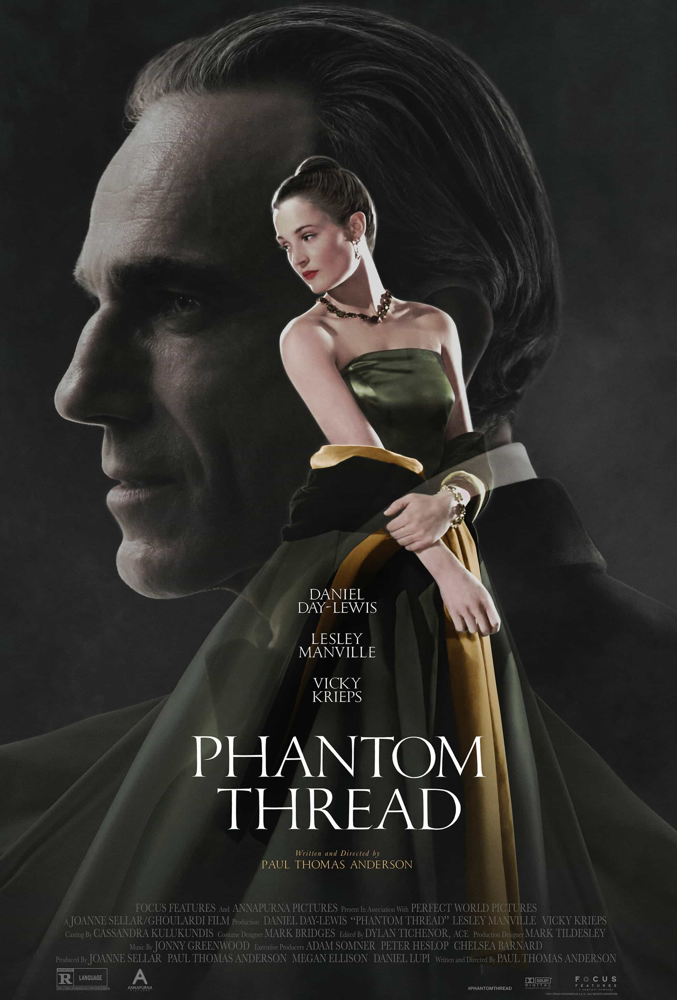

Phantom Thread
2017
Phantom Thread, like Eyes Wide Shut, is Dex's favorite film in a director's filmography, this one being Paul Thomas Anderson. He likes how delicate each shot is, how tense the plot becomes, and how stellar the trio of lead performers are. Compared to PTA's other films, this one is the most understated and quiet, while still captivating the audience. Dex is especially drawn to the power dynamics between an artist and his muse, a man and his sister who manages his work, and between working woman and the business venture she becomes tangled up in.